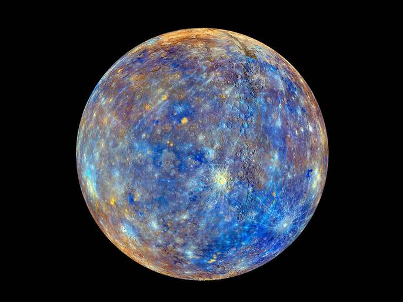
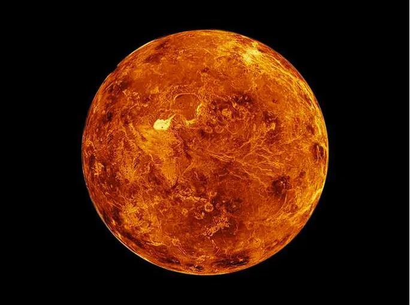
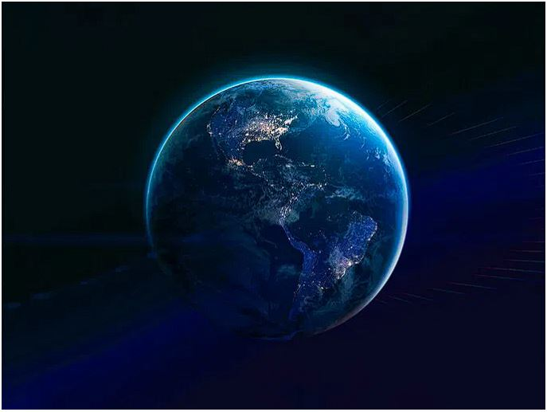
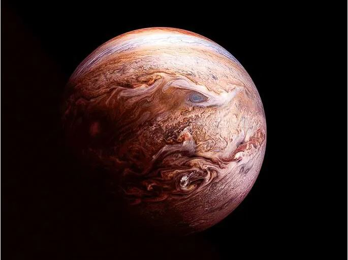
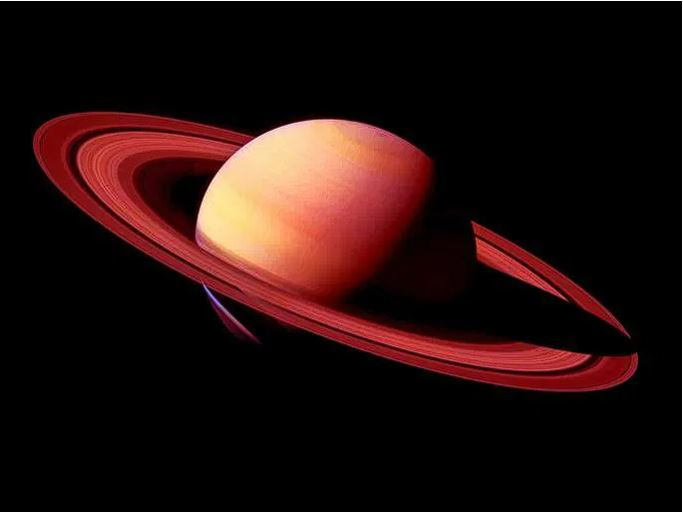
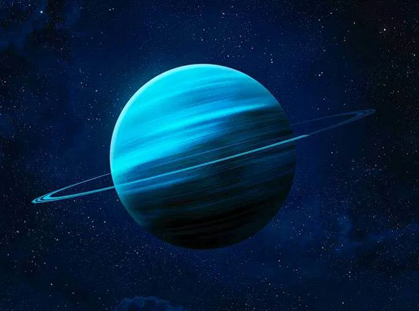
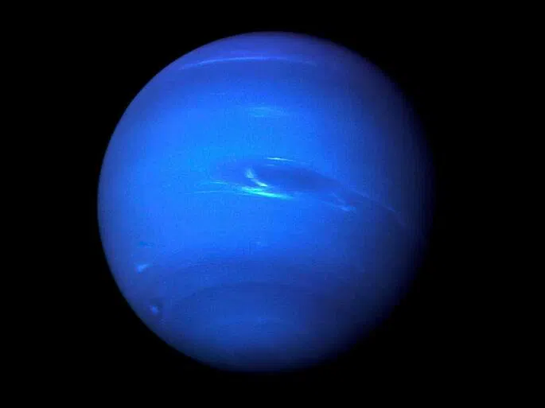

Planetas do Sistema Solar
Neste site, buscamos falar sobre os planetas e de suas caracteristicas, assim como descobertas sobre eles.
Como uma pequena contextualizãção, o sistema solar possui oito planetas, sendo eles:
Mercúrio

Mercúrio é o planeta mais próximo do Sol. É um planeta rochoso, destituído de satélites e atmosfera rarefeita, sendo também o menor planeta do sistema solar.
Por esse motivo apresenta temperaturas bastante elevadas de aproximadamente 400°C.
Por outro lado, a face do planeta não iluminada pelo sol pode atingir temperaturas de aproximadamente -170 °C.
O movimento de rotação do planeta é de 59 dias, enquanto o de translação é de 87 dias.
Acesse aqui para mais informações sobre mercúrio:
Clique aqui
Vênus

Conhecido como “Estrela d’alva”, por causa de seu forte brilho, Vênus tal qual Mercúrio é um planeta que não possui satélite.
Visível do nosso planeta, Vênus é o segundo planeta a partir do Sol e o mais perto do planeta Terra.
Curioso notar que mesmo sendo o segundo planeta a partir do Sol (depois de Mercúrio), Vênus é o planeta mais quente do sistema solar, com temperaturas que podem atingir 480°C.
Assemelha-se com o planeta Terra no tocante ao tamanho, composição, estrutura, massa, densidade e força gravitacional.
Acesse aqui para mais informações sobre Vênus:
Clique aqui
Terra

Terceiro planeta do sistema solar a partir do Sol, o planeta Terra é rochoso, com atmosfera gasosa e temperatura média de 15°C.
Possui apenas um satélite natural, a lua, conhecida como Selene. É chamado de "planeta azul", pois possui um elevado volume de água.
Além disso, o teor de oxigênio ideal na atmosfera permite o desenvolvimento da vida. O planeta Terra é o único planeta do sistema solar que abriga vida humana..
A rotação da Terra dura, aproximadamente, 24 horas. Por outro lado, o movimento de translação ocorre em 365 dias, ou um ano.
Contudo, em anos bissextos, apresentam 366 dias, com o aumento de um dia a mais no mês de fevereiro.
Acesse aqui para mais informações sobre Terra:
Clique aqui
Marte

Quarto planeta a partir do Sol e o mais visível do planeta Terra, Marte possui dois satélites naturais “Fobos e Deimos”, sendo o segundo menor planeta do sistema solar, atrás de Mercúrio.
Também chamado de “planeta vermelho”, devido às partículas de óxido de ferro presentes em sua atmosfera, o planeta Marte é um planeta rochoso, frio e seco.
O movimento de rotação de Marte assemelha-se ao da Terra, com duração de 24 horas e 37 minutos, enquanto que o movimento de translação do planeta é de 687 dias.
Acesse aqui para mais informações sobre Marte:
Clique aqui
Júpiter

Júpiter é o maior planeta do sistema solar. É um planeta gasoso (composto sobretudo por hidrogênio), 1.300 vezes maior do que o planeta Terra.
Quinto planeta a partir do Sol, Júpiter possui o maior número de satélites, 79 satélites, e apresenta temperaturas de até -150°C.
Acesse aqui para mais informações sobre Júpiter:
Clique aqui
Saturno

Segundo maior planeta do sistema solar, depois de Júpiter, Saturno é conhecido pelos seus anéis, formados por rocha, gelo e poeira.
Sexto planeta a partir do sol, depois de Júpiter, Saturno é o planeta do sistema solar que possui muitos satélites: 145 luas, muitas delas publicadas recentemente.
Composto basicamente de hidrogênio, ele possui temperatura média de -140°C, sendo que seu movimento de rotação dura 10 horas e 39 minutos e o de translação cerca de 30 anos
terrestres.
Acesse aqui para mais informações sobre Saturno:
Clique aqui
Urano

Terceiro maior planeta do sistema solar e sétimo planeta a partir do Sol, Urano é um planeta gasoso que apresenta médias de temperatura de -185°C e possui 27 satélites.
Possui uma característica interessante tocante ao seu eixo de rotação com quase noventa graus em relação com o plano de sua órbita, que por sua vez é muito extensa.
Dessa forma, o movimento de rotação do planeta dura 17 horas aproximadamente, enquanto o movimento de translação dura cerca de 84 anos terrestres.
Acesse aqui para mais informações sobre Saturno:
Clique aqui
Netuno

Planeta do sistema solar mais distante do Sol e o quarto maior em tamanho, Netuno possui 14 satélites naturais e apresenta temperaturas médias de aproximadamente -200°C.
Trata-se de um planeta gasoso, formado principalmente por hidrogênio, hélio, amônia, metano e água. O movimento de rotação do planeta dura cerca de 16 horas, enquanto sua translação equivale a 164 anos terrestres.
Para mais informações externas, aqui está um link que aborda mais sobre o tema:
Clique aqui